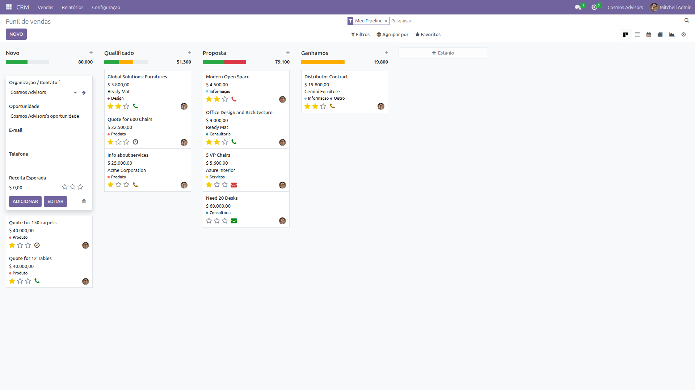
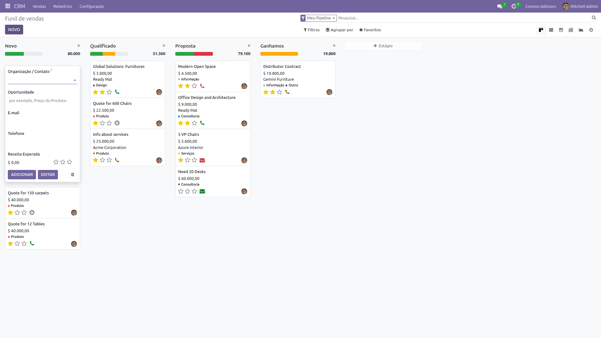

Visão Geral
O que é um Lead e por que usá-lo
Um Lead é uma oportunidade de negócio identificada. Pode ser um contato de um site, uma indicação ou fruto de prospecção ativa.
No Odoo CRM, os leads ficam organizados em um Pipeline (funil de vendas), onde você acompanha o progresso de cada oportunidade desde o primeiro contato até o fechamento.
Passo a Passo
Como criar um lead no CRM do Odoo
Acessar o CRM
No menu superior, clique em CRM. Você verá o Pipeline com os estágios: Novo, Qualificação, Proposta, Negociação, Ganho, Perdido.
Ver as oportunidades existentes evita duplicidades e mostra o status atual das vendas.
Clicar em NOVO
Clique no botão NOVO no canto superior esquerdo. Um formulário rápido será aberto.

Preencher os Dados
Preencha as informações principais do lead:
| Campo | Obrigatório? | Descrição |
|---|---|---|
| Assunto | Sim | Título resumido da oportunidade |
| Cliente | Não | Nome da empresa ou contato |
| Valor Estimado | Não | Quanto a oportunidade pode render |
| Probabilidade | Não | Chance de fechar (% emprestimo) |
| Responsável | Não | Quem vai cuidar da oportunidade |
| Tag de Palavra-chave | Não | Classificação (ex: M&A, Due Diligence) |
Adicionar ao Pipeline
Clique em "Adicionar" para salvar o lead no estágio "Novo" do Pipeline.
O lead aparecerá como um card no kanban, pronto para ser movido entre os estágios conforme o andamento.

Mover no Pipeline
Arraste o card para o próximo estágio conforme o progresso:
Cada movimentação atualiza automaticamente a probabilidade e gera relatórios de conversão.
Fluxo Completo
Veja em tempo real como criar um lead
GIF: Criando um lead no CRM do Odoo
✨ Boas Práticas
- Use títulos descritivos para identificar oportunidades
- Preencha o valor estimado para previsão de receita
- Adicione tags para classificar por tipo de serviço
- Atualize a probabilidade conforme negocia
- Mova o card no pipeline para manter histórico
- Registre anotações no chatter para acompanhar interações